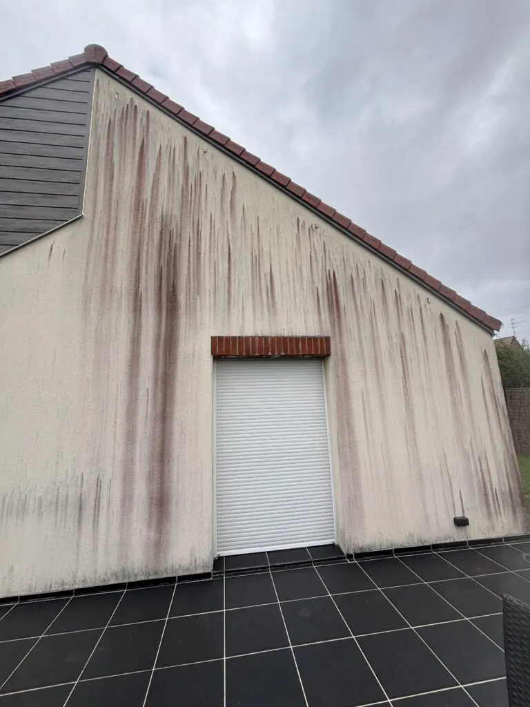

Nettoyage de façade - brique, crépi, pierre, bardage et PVC
Chaque mur est unique. Nous adaptons notre technique pour décrasser votre façade en douceur, dans le respect du matériau, avant d'appliquer un traitement protecteur longue durée.


Nettoyage d'une façade enduite – Nord-Pas-de-Calais
Résultat concret d'une intervention
Faites glisser le curseur pour voir la différence, ou parcourez nos réalisations pour d'autres exemples de chantiers.
Un procédé adapté à chaque type de mur
Sur la brique, Cleanibat utilise un procédé innovant qui remet à neuf la façade quel que soit le type de brique, sans produit chimique agressif.
Sur crépi et PVC, nos produits professionnels et écologiques éliminent les traces, mousses et salissures avec des résultats visibles rapidement. Chaque devis précise les techniques et les outils utilisés, pour une relation basée sur la confiance et la transparence. Le détail des méthodes et produits utilisés selon votre façade est expliqué dans notre article dédié.
Que votre façade soit à Lens, à Arras, à Béthune, à Lille ou ailleurs dans le Nord-Pas-de-Calais, nous nous déplaçons pour un diagnostic gratuit avant toute intervention.
- Écologique, sans produit chimique agressif
- Résultats visibles rapidement
- Traitement anti-mousse et anti-salissure en finition
Une méthode adaptée à chaque support
Brique & pierre
Procédé innovant sans produit chimique agressif, adapté quel que soit le type de brique ou de pierre.
Crépi & enduit
Pulvérisation de produits professionnels écologiques : résultats visibles rapidement.
Bardage & PVC
Haute pression maîtrisée et produits adaptés pour un nettoyage efficace sans abîmer le revêtement.
Chaque façade est différente : estimation gratuite en 2 minutes
Le prix dépend de la surface, du support (brique, enduit, pierre, bardage), de son état, de la hauteur et du traitement de finition.
Devis gratuit et sans engagement, estimation possible à distance sur photos.
Un partenaire local, transparent et réactif
- Esthétisme - redonnez rapidement une seconde vie à votre façade
- Rapidité - intervention planifiée rapidement après acceptation du devis
- Sécurité - les façades hautes peuvent être dangereuses : confiez-les à des professionnels équipés
- Transparence - produits, procédés et tarifs clairs, sans surprise

Avis clients
"Je tiens à recommander vivement ce jeune artisan couvreur pour son excellent travail sur ma toiture. Les tuiles en béton ont retrouvé leur aspect et leur couleur d'origine, le résultat est impeccable. C'est un professionnel très ponctuel qui a respecté ses engagements en venant à plusieurs reprises comme convenu. J'ai particulièrement apprécié sa rigueur : il a nettoyé avec soin tous les résidus après son passage, y compris chez les voisins, ce qui témoigne d'un grand respect et d'un professionnalisme exemplaire."
"Entreprise très réactive et de bon conseil. Le nettoyage de la toiture a été réalisé avec sérieux et efficacité, le résultat est vraiment top. Équipe professionnelle et agréable. Je recommande !"
"Excellente prestation, de la prise de RDV au service après vente (une marque récalcitrante sur la toiture). Un prix très raisonnable, des explications claires, des bosseurs ! Je recommande sans hésiter."
Note relevée le 17/11/2026 sur notre fiche Google.
Le nettoyage de façade en 5 questions
Non : la pression et les produits sont choisis selon le support pour nettoyer en profondeur sans fragiliser le matériau ni créer de points d'infiltration.
C'est recommandé : un traitement anti-mousse et anti-salissure en finition prolonge nettement la durée de propreté de votre façade.
Oui, avec le matériel et les équipements de sécurité adaptés. C'est justement pour cette raison qu'il vaut mieux confier ce type de chantier à des professionnels.
Le tarif dépend de la surface, du support et de son état. Le déplacement et le devis sont gratuits et sans engagement.
Le nettoyage ne remplace pas un ravalement complet : il retire les mousses, salissures et pollution qui ternissent le mur, pour un résultat proche du neuf à un coût bien inférieur à un ravalement.
Basés à Lille, nous intervenons pour le nettoyage de façade à Lille, Lens, Arras, Béthune, Douai et dans tout le Nord et le Pas-de-Calais. Comme pour le nettoyage de toiture et de terrasse, un devis gratuit vous est proposé sous 24h où que vous soyez dans la région.
À lire aussi : le guide complet du nettoyage extérieur et nettoyer ses gouttières avant l'hiver.